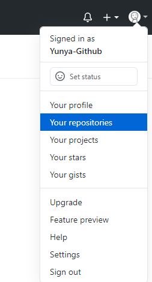
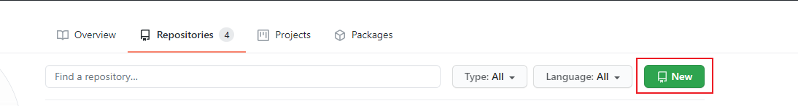
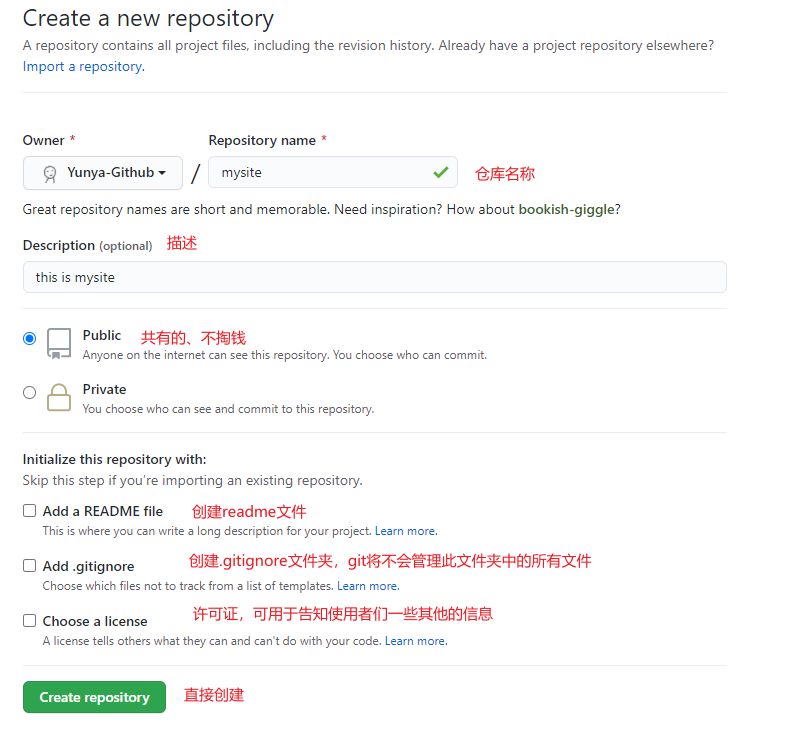
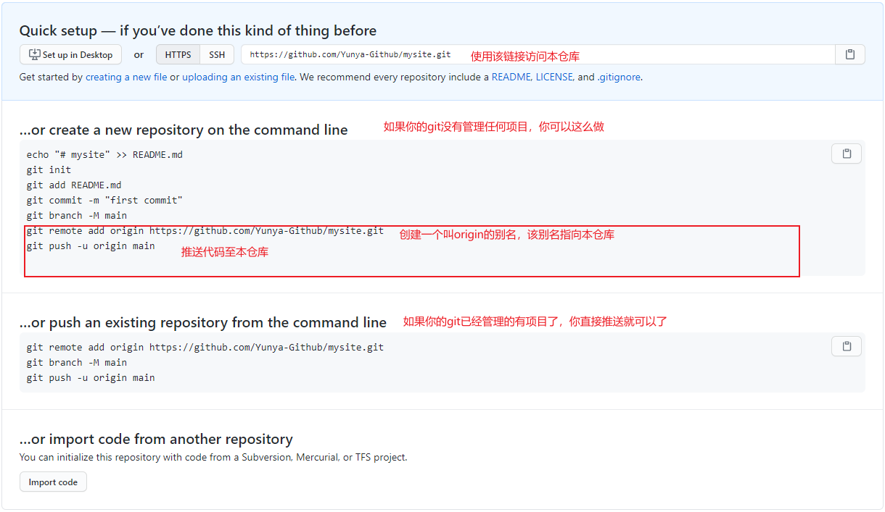

首先配置一下个人信息
git config --global user.email "邮箱地址"
git config --global user.name "用户名"
然后进入要进行项目管理的文件夹，输入以下命令让Git管理该文件夹
git init
当初始化命令生效后，在该文件夹中会生成一个.git的隐藏文件夹。
然后我们使用以下命令来检测当前文件夹中被管理的文件状态
git status
新增的文件和修改后的文件均属于未被管理的文件，呈现红色状态
接下来可以使用以下任意一个命令对文件进行管理
git add 文件名 # 仅仅管理一个文件
git add . # 代表当前目录下的所有文件
这时再次输入"git status"命令就可以看到文件变成了绿色
接着使用以下命令，将文件添加到仓库
git commit -m "本次提交的说明"
当对项目中的文件进行变动时，也会被Git进行检测到,此时输入"git status"可以看到修改的文件变红了
接着依次以下两个命令对文件进行管理和提交
git add 文件名 # 仅仅管理一个文件
git commit -m "本次提交的说明"
接着使用以下命令就可以查看最近的提交日志
git log
此时就进入了日志查看的状态，可以使用上下键来查看，或按下"q"退出,如果嫌输出信息太多，可以加上"--pretty=oneline"在命令后面加上参数
每个版本都有一个对应的SHA1值，要通过这个来回滚版本
接着就可以使用以下命令将其退回上一个版本
git reset --hard HEAD^
其中HEAD表示当前版本，上一个版本就是HEAD^，上上一个版本就是HEAD^^，往上100个版本可以写成HEAD~100
或者可以指定版本号进行回滚
git reset --hard 版本号
版本号没必要写全，前几位就可以了，Git会自动去找
若回滚到了低版本想回到高版本时，可以使用以下命令查看查看所有分支的所有操作记录
git reflog
接着使用"git reset --hard 版本号"进行版本替换
当修改了文件后，使用"git status"可以看到修改的文件变红了
如果想撤销这一次的修改，可以输入以下命令
# 放弃单个文件修改,注意不要忘记中间的"--",不写就成了检出分支了
git checkout . # 放弃所有的文件修改
若已经使用"git add ."将文件添加到了缓存区，那可以使用以下命令来撤销修改
git reset HEAD 文件名 # 放弃指定文件的缓存
git reset HEAD . # 放弃所有的缓存
若是已经使用"git commit -m "本次提交的说明""将修改提交了，那只能使用"git reset --hard 版本号"进行退回了
当在本地新增了一个文件并上传之后，如果之后又进行了删除，在使用"git status"可以git会提示那些文件被删除了
如果确定要删除，可以输入以下命令进行删除
git rm 文件名
接着使用"git commit"进行提交
如果不想删除，可以使用"git checkout -- 文件名"进行恢复
在上面的操作中，可以发现目前的一个文件可以有多个状态
1.已控制状态：指该文件可以被git管理的状态，目前来讲所有位于git init文件夹下的文件都是以控制状态
2.已变动状态：当有新文件，或原本文件被修改后，使用git status呈现红色状态的文件
3.暂存区状态：指的是执行git add命令后，红色状态文件变为绿色状态的文件
4.版本库状态：指的是执行git commit命令后，提交至版本库的文件

当我们登录GitHub之后，首先要做的就是创建一个远程仓库
然后点击New准备新建仓库
对仓库进行配置
创建完成
首先输入以下命令，将本地仓库与远程仓库进行关联，origin是别名
git remote add origin https://github.com/FengTai-Red/GitTest.git
接着输入以下命令，将本地仓库的所有内容推送到远程仓库
git push -u origin master
由于远程库是空的，我们第一次推送master分支时，加上了-u参数，Git不但会把本地的master分支内容推送的远程新的master分支，还会把本地的master分支和远程的master分支关联起来，在以后的推送或者拉取时就可以简化命令
第一次使用GitHub，会弹出验证窗口，点击按钮登录即可
现在打开仓库，就能看到文件都已经上传上去了
接下来只要只要本地作了提交，就可以通过以下命令将其推送到远程仓库
git push origin master
使用以下命令进行拉取
git clone https://github.com/FengTai-Red/GitTest.git
可以使用以下命令来查看分支情况
git branch
使用以下命令来创建一个分支
git branch 新分支名字
这时在使用"git branch"命令就可以看到刚刚新建的分支了，其中前面带"*"号的就是当前处于的分支
使用以下命令进行分支的切换
git checkout 分支名字
现在就可以在该分支对当前项目进行操作
接下来的操作和前面一样，将修改后的文件添加到暂存区，然后提交
接下来进行分支合并，先使用">git checkout"切换为主分支，然后使用以下命令进行分支合并
git merge 分支名字
使用"git log"命令可以看到分支合并的操作
如果不想要该分支了，可以使用以下命令进行删除
git barnch -d 分支名字
使用多分支进行开发，可能会出现合并冲突的情况
比如在master和dev都对同一行进行了修改，且都使用"commit"提交到了版本库中
接下来使用"merge"进行合并操作时，git会提示存在合并冲突的问题
在vscode等编辑器中打开合并冲突的文件，可以看到Git用<<<<<<<，=======，>>>>>>>标记出不同分支的内容
这种情况就需要手动进行修改，解决冲突后在进行"add"和"commit"提交到版本库即可
当多次进行代码提交后，那么提交记录将会变得非常的繁琐
这是可以使用以下命令将版本进行合并，让他看起来更简洁。（这可能会引发合并冲突）
git rebase -i HEAD~4 # 从最上面的版本数四个进行合并
现在它会弹出一个vim，需要编辑描述信息
再使用git log进行查看，就简洁多了